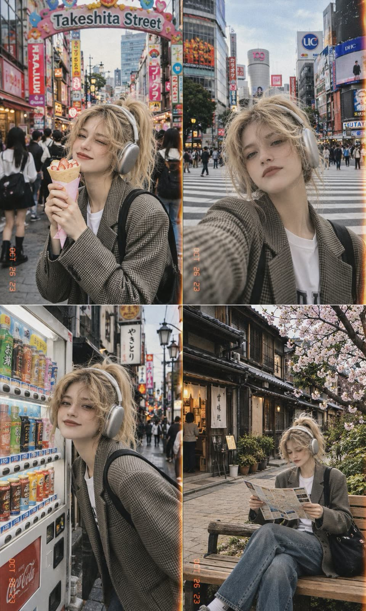

GPT Image 2.5 Tokyo 2×2 collage: 1990s disposable-film snapshots with orange date stamps
GRN-045Grain / FilterGPT Image 2.5 (on ChatGPT; model name as stated by the creator)by @Ziha_ai2026-10-25

Four candid travel panels of one woman (Harajuku crepe, crossing selfie, vending machine, bench with a map) under one photography-style block: warm film grain, faded highlights, low contrast, slightly imperfect framing and orange date stamps like old 35mm prints.
Prompt
Create a 2×2 collage of four candid, ultra-realistic street photography shots featuring the same stylish young woman exploring Tokyo, Japan, with a nostalgic 1990s disposable film camera aesthetic. Subject: A beautiful young woman with platinum blonde hair tied in a high ponytail, soft face-framing strands, silver over-ear headphones, and natural makeup. She wears an oversized gray-brown checkered blazer over a white T-shirt, relaxed blue jeans, and carries a black shoulder bag. Maintain consistent facial features, hairstyle, outfit, and accessories across all four photographs. Top-left panel: The woman stands on Takeshita Street in Harajuku, smiling brightly while holding and eating a Japanese crepe wrapped in paper. A colorful “Takeshita Street” entrance sign, crowded pedestrian street, Japanese storefronts, and busy urban surroundings fill the background. Top-right panel: A casual arm's-length selfie of the same woman standing at a busy Tokyo pedestrian crossing. She looks directly into the camera with a relaxed expression. Large Japanese commercial buildings, street signs, traffic lights, and white zebra-crossing stripes create an authentic city atmosphere. Bottom-left panel: The woman smiles playfully beside a Japanese vending machine filled with colorful drinks. She leans slightly toward the camera, with a narrow shopping street, small storefronts, and Japanese signs extending into the background. Bottom-right panel: The woman sits on a wooden bench along a quiet traditional Japanese shopping street, reading a folded paper map or travel guide. Weathered wooden buildings, small shop entrances, potted greenery, and delicate cherry blossom branches create a peaceful springtime atmosphere. Photography style: Authentic candid snapshots, slightly imperfect framing, natural body language, soft overcast daylight, subtle motion blur, realistic skin texture, muted colors, warm film grain, faded highlights, gentle shadows, low contrast, and a nostalgic analog camera finish. Add subtle orange date stamps near the bottom edges of the photographs, resembling old 35mm film prints. Composition: Four equally sized rectangular photographs arranged in a clean 2×2 grid, separated by thin vertical and horizontal borders. Consistent subject identity throughout, documentary-style travel photography, realistic Japanese urban details, natural proportions, and a spontaneous personal travel diary feeling. Aspect ratio: 3:5 vertical collage. Avoid: Cartoon styling, illustration, excessive retouching, plastic skin, inconsistent faces, duplicated people, distorted hands, incorrect clothing, artificial lighting, and overly saturated colors.
Our Seedance 2.5 adaptation
[ADAPTED for Seedance 2.5 by Grok Bot; not the creator's prompt. Follows the official BytePlus Seedance 2.5 prompt guide and its official sd25-pe prompt-optimizer skill: parameters only on the API line (not in the prompt body), subject + action + scene, then visuals, camera (move, subject, start, direction, arrival) and sound; only the source's own exclusions are kept.] API: duration 12, ratio 9:16, resolution 1080p, generate_audio true. An adult woman with platinum-blonde hair in a high ponytail, silver over-ear headphones, an oversized grey-brown check blazer over a white T-shirt, blue jeans and a black shoulder bag spends a day wandering Tokyo, filmed like candid snapshots from a cheap 1990s point-and-shoot. 0-3s: On a crowded Harajuku shopping street she laughs and takes a bite of a paper-wrapped crepe. 3-6s: Arm's-length selfie at a busy pedestrian crossing; she looks straight into the lens, relaxed, as people cross behind her. 6-9s: She leans toward the camera, smiling, beside a vending machine full of colourful drinks on a narrow shopping street. 9-12s: She sits on a wooden bench on a quiet old shopping street under cherry-blossom branches, unfolding a paper map. Look: soft overcast daylight, warm film grain, faded highlights, low contrast, muted colours, slightly imperfect framing, light motion blur; a small orange date stamp in the lower corner of each beat; consistent face and outfit throughout. No cartoon styling, no heavy retouching, no plastic skin, no oversaturated colour. Handheld snapshot framing, a quick cut between each beat. Sound: <crowd and crossing signal chirps> <vending machine hum>, her quiet laugh, light wind; no music.
Tags: disposable camera, 1990s film, date stamp, 2x2 collage, candid travel, faded highlights